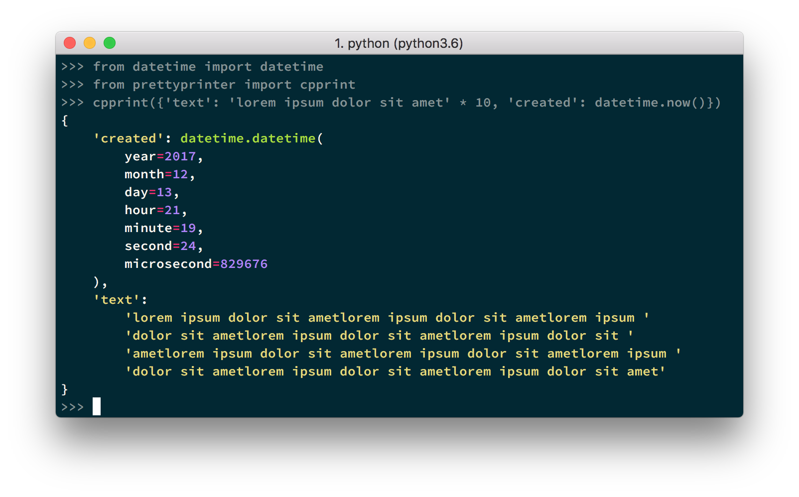
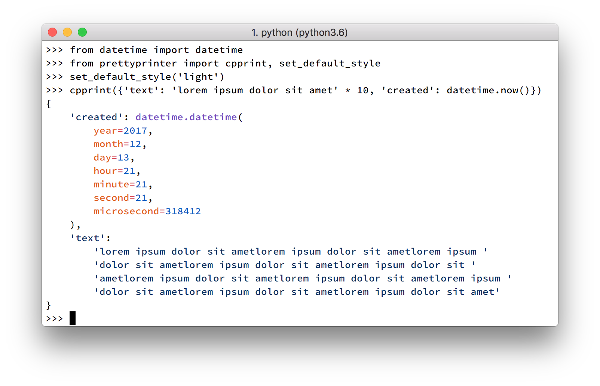

Introducing PrettyPrinter for Python
By Tommi Kaikkonen in 2017
PrettyPrinter is a powerful, syntax-highlighting, and declarative pretty printer for Python 3.6+. It uses a modified Wadler-Leijen layout algorithm, similar to those used in Haskell pretty printer libraries prettyprinter and ansi-wl-pprint, JavaScript's Prettier, Ruby's prettyprinter.rb and IPython's IPython.lib.pretty. It combines the best parts of each and builds more on top to produce the most powerful pretty printer in Python to date.
Here are some pretty screenshots to demonstrate PrettyPrinter output:
 
Why does Python need another pretty printer?
Printing data to the screen is a developer's primary interface to values in a runtime, whether that's done by an IDE or manually by the developer. Improving that interface goes a long way to improve development experience and productivity. Python and third party libraries provide tools to help with that:
__repr__and__str__dunder methods that return plain strings.__repr__should return a syntactically correct Python expression if possible, and is most commonly used to output values that failed test assertions, or values evaluated in the shell. As it is based purely on string formatting, it has no pretty printing capabilities.- The standard library module
pprintoffers pretty-printing facilities for native data types like dicts, lists, tuples, sets, and frozensets. It delegates to__repr__methods of user-defined class instances. However, it has a very greedy layout algorithm that fails to produce pretty output in many cases. Since you're own pretty printer definitions are restricted to what you can return in__repr__, its capabilities are limited for everything but the native types. - The third party library
pprintppis an improvement and a drop-in replacement forpprintthat produces nicer output, but likepprint, restricts used-defined pretty printing to__repr__. - The default representation printer in IPython,
IPython.lib.pretty, is intended as an advanced drop-in replacement forpprint. It is a superior implementation topprintin many ways: the algorithm works well to deliver pretty output in most cases, and it provides tools to define pretty printers for user-defined types that compose well with the rest of the output. However, to implement your own pretty printers, you need to know how the layout algorithm works. Further, the API is inherently side-effectful: calling a pretty printer pushes data directly into a layout buffer, not allowing for easy inspection of layout primitives.
All of the above fall short of what I consider a great pretty printing experience. I set out to make the following improvements:
- Implement an algorithm that tries very hard to produce pretty output, even if it takes a bit more work. Taking 1/10th of a second longer to pretty print doesn't matter if it saves me two seconds when looking at the data to find what I need.
- Implement a dead simple, declarative interface to writing your own pretty printers. Python developers rarely write
__repr__methods because they're a pain; no one will definitely write pretty printing rules for user-defined types unless it's super simple. - Implement syntax-highlighting that doesn't break on invalid Python syntax. Not all
__repr__methods produce valid syntax, and therefore break normal syntax highlighters.
I was surprised by how well the library turned out. The algorithm works superbly, and is fast enough. To define your own pretty printers, you only need to know two declarative functions, register_pretty and pretty_call. The syntax-highlighting looks beautiful, and doesn't break on invalid syntax. Especially the syntax-highlighting makes it hard to go back to normal pretty printers, it helps the development experience significantly.
The most interesting improvement is the declarative API—here's a rundown of how it works.
Simple, declarative API
Defining pretty printers in PrettyPrinter is based on (constructor) function calls. All non-literal Python values should be represented as such. The workhorse function of the library is pretty_call, which allows you to describe what kind of function call PrettyPrinter should output. For example, given the following pretty_call call:
from prettyprinter import pretty_call
# ctx is available in pretty printer definitions
layout_primitive = pretty_call(ctx, sorted, [5, 3, 6, 1], reverse=True)
When PrettyPrinter processes layout_primitive, it'll look like this:
sorted([5, 3, 6, 1], reverse=True)
(The ctx passed as the first argument allows you to control how any nested data, in this case the list [5, 3, 6, 1] and the True value in the reverse keyword argument are rendered. Most of the time, it is passed as is.)
Given that we understand how to use pretty_call, let's define our own type:
class MyClass:
def __init__(self, one, two):
self.one = one
self.two = two
Using the register_pretty decorator, we can define the pretty printer for MyClass:
from prettyprinter import register_pretty, pretty_call
@register_pretty(MyClass)
def pretty_myclass(value, ctx):
return pretty_call(ctx, MyClass, one=value.one, two=value.two)
The output from cpprint expectedly is:
>>> from prettyprinter import cpprint
>>> cpprint(MyClass(1, 2))
MyClass(one=1, two=2)
For more examples, see the PrettyPrinter definition code for standard library types.
Representing stateful instances
A drawback of constructor calls is that they don't represent stateful instances well. Generally you want some kind of extra output that indicates instance state. PrettyPrinter handles this with declarative comments, a powerful feature I'm pretty excited about. Annotate a Python value (or a layout primitive representing a Python value) with a comment, and the output will magically include the comment next to it in the output.
Consider a Connection class with a state that is either open or closed:
class Connection:
def __init__(self, hostname):
self.hostname = hostname
self.is_open = False
def open(self):
self.is_open = True
def close(self):
self.is_open = False
If we want the following output:
Connection('http://example.com') # Status: Open
We can achieve that with the following definition:
from prettyprinter import register_pretty, pretty_call, comment
@register_pretty(Connection)
def pretty_connection(connection, ctx):
status_text = (
'Status: Open'
if connection.is_open
else 'Status: Closed'
)
return comment(
pretty_call(
ctx,
Connection,
connection.hostname,
),
status_text
)
Conclusion
I've enjoyed using PrettyPrinter as a part of my development toolkit. There's a lot more to it than what I can go through in one article, so I suggest you give it a try! I recommend using it with IPython, as everything you evaluate in the REPL can be automatically printed using PrettyPrinter. The instructions to set that up can be found in the documentation.
Check out the source code on GitHub and the (still slightly rough) documentation on readthedocs.io. The package includes ready-made definitions for Django Models and QuerySets, as well as any class created using the attrs package, so if you're using either you'll definitely want to give it a spin!